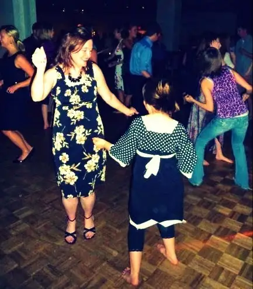

“Were your ears burning like crazy today?” my friend asked. She was smiling and I had an immediate clue where she was going with it.
Earlier that day, I’d run into a mutual friend from our faith-sharing group. I’d missed our weekly gathering that afternoon to help with my son’s school field trip, and apparently, in my absence, my name had come up more than once, or so my other friend had told me.
“Yes we mentioned you a few times,” the one before me now said. She proceeded to explain that the afternoon’s focus had been on being brave for one’s faith — sticking your neck out in ways many would find inconceivable, yet inspiring.
Mostly, they were referring to my writing and the risks I regularly take through sharing and defending the faith.
“We just couldn’t imagine doing it,” she said. “You’re so brave!”
Who me, brave?
 |
| Being gutsy on the dance floor with my daughter several years ago |
{kind=link}
It was nice to know the discussion had surrounded something they perceived as positive, and in some ways, perhaps better they talked freely without me around. I don’t need to know all the details to understand it was an affirming discussion. But if I had been there, I would have had to be honest about it all.
“You know why I’m gutsy, right?” I said. She looked at me questioningly. “It’s because of you all, and Him.”
It’s true, I take a few chances when I’m out there writing blog posts and columns. Recently, I took a big one, speaking out on my confusion over what I perceive as a pattern in the atheist world to covet at least some of the ways of believers.
I know it was bold, and I got some slack from the non-believing camp. Even if my purpose was ultimately to generate discussion and probe to better understand for the sake of unity, some did not receive it that way.
But I did not enter those waters lightly. And I didn’t enter without first knowing it was safe to do so.
Granted, the waters I entered were a bit murky, but I knew they were safe — not because there were no potential hazards in them, but because I knew I’d be buoyed up by the nurturing circles that serve as essential reinforcement.
My family.
My friends.
My spiritual director and mentor.
My online community.
Prayer.
The Eucharist.
My belief in a loving God who wants ultimately to draw everyone to himself, and on whom I depend for my every breath.
Because of all this, I did not crumble when the challenges came. Rather, I felt an underlying peace flowing through my soul.
On my own, I am not gutsy at all. I’m just as weak as the next human being, just as vulnerable, just as skittish. But when all these other things are added onto what little I am able to offer on my own, they bring an abundance of fortitude my way.
If I didn’t have a loving circle to return to each week and every day in some sense, I could not “go out there” and be bold. I would be a cowering mess.
Because at bottom, we are all fragile, and we are all — even those who don’t show it — completely dependent on others. We cannot, by ourselves, tackle the tasks of this world. Not even close. We need others to hold us up and encourage us onward. And if we go by faith, those reinforcements will come, just as we need them. Often, not a minute sooner, but always perfectly timed.
In my “Magnificat” today, I read the following:
“Branches severed, branches hanging tenuously from Christ the vine, wither.” While, on the other hand: “Branches firmly grafted into Christ the vine continue to be refreshed and renewed by the water of life, the Spirit of God, for whom all human beings thirst, knowingly or unknowingly.”
Did you catch that? If we are firmly grafted into Christ the vine, we will continue to be refreshed and renewed by the water of life!
That is the secret to being gutsy. We are not alone! Jesus himself will provide all that we need — the living water. I feel this, daily. Just when I’m about to give up, another sip is offered, and it is deeply quenching. It revives, strengthens and readies the soul.
We can trust in this. We can. It doesn’t make sense on a natural level, but I have lived this and know it to be true. The supernatural graces that flow when we cling tenaciously to our branch, Christ the vine, will be just what we need to collect all that is necessary to do God’s will.
Gutsy with fortification, yes, but whatever it takes to follow my Lord.
Q4U: Who and what makes you brave?